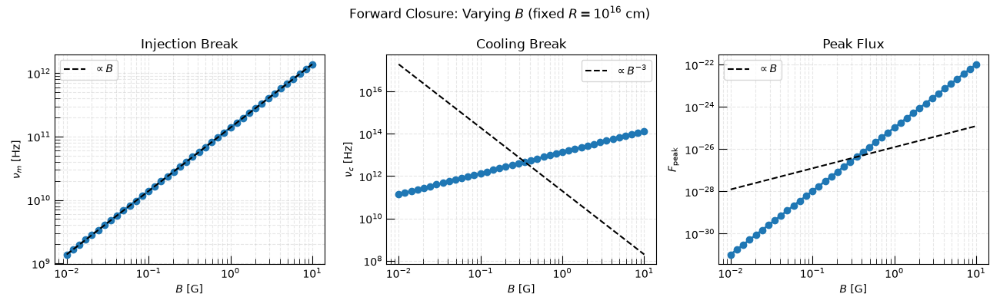
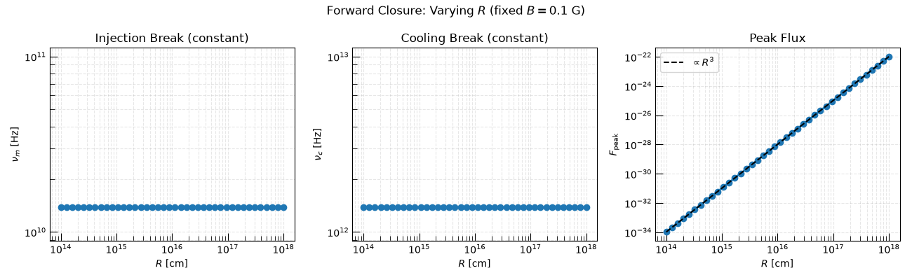
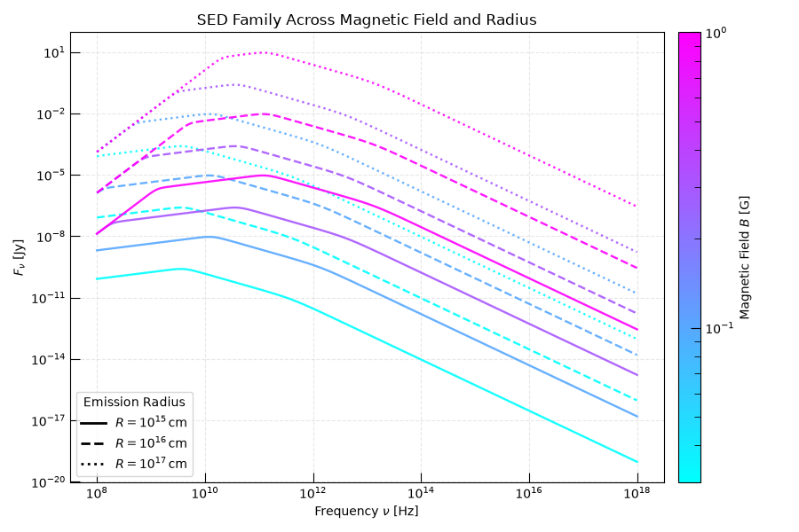

Note
Go to the end to download the full example code.
From Physical Parameters to SED Parameters: the Forward Closure#
The forward closure maps physical parameters of a synchrotron-emitting region — magnetic field \(B\), emitting radius \(R\), microphysical energy fractions \(\epsilon_E\) and \(\epsilon_B\), and the electron energy distribution — onto the phenomenological spectral parameters that are directly measured from broadband observations.
For
PowerLaw_Cooling_SSA_SynchrotronSED
the characteristic scales follow
where
\(\nu_m\) is the injection break,
\(\nu_c\) is the cooling break,
\(F_{\rm peak}\) is the flux normalization.
The peak flux reflects the number of radiating electrons and the single-electron synchrotron power:
This example illustrates these scalings by varying the magnetic field and emitting radius while holding all other parameters fixed.
Warning
These closure relations assume a single homogeneous emission zone, isotropic pitch-angle distribution, and a power-law electron population.
import matplotlib.colors as mcolors
import matplotlib.pyplot as plt
import numpy as np
from astropy import units as u
from matplotlib.lines import Line2D
from trilobite.radiation.synchrotron.SEDs import PowerLaw_Cooling_SSA_SynchrotronSED
from trilobite.utils.plot_utils import set_plot_style
set_plot_style()
Fixed Physical Parameters#
Section 1: Varying Magnetic Field#
Holding the emitting radius fixed isolates the magnetic-field scalings:
B_arr = np.geomspace(0.01, 10, 40) * u.G
nu_m_B = []
nu_c_B = []
F_peak_B = []
for B in B_arr:
pars = sed.from_physics_to_params(
B=B,
R=R_fixed,
gamma_min=gamma_min,
gamma_c=gamma_c,
p=p,
epsilon_E=epsilon_E,
epsilon_B=epsilon_B,
luminosity_distance=D_L,
)
nu_m_B.append(pars["nu_m"])
nu_c_B.append(pars["nu_c"])
F_peak_B.append(pars["F_peak"])
nu_m_B = u.Quantity(nu_m_B)
nu_c_B = u.Quantity(nu_c_B)
F_peak_B = u.Quantity(F_peak_B)
B_val = B_arr.to_value(u.G)
B_ref = B_val[len(B_val) // 2]
fig, axes = plt.subplots(1, 3, figsize=(13, 4))
axes[0].loglog(B_val, nu_m_B, "o-", lw=2)
axes[0].loglog(B_val, nu_m_B[len(B_val) // 2] * (B_val / B_ref), "k--", label=r"$\propto B$")
axes[0].set_xlabel(r"$B$ [G]")
axes[0].set_ylabel(r"$\nu_m$ [Hz]")
axes[0].set_title("Injection Break")
axes[0].legend()
axes[0].grid(True, which="both", ls="--", alpha=0.3)
axes[1].loglog(B_val, nu_c_B, "o-", lw=2)
axes[1].loglog(B_val, nu_c_B[len(B_val) // 2] * (B_val / B_ref) ** (-3), "k--", label=r"$\propto B^{-3}$")
axes[1].set_xlabel(r"$B$ [G]")
axes[1].set_ylabel(r"$\nu_c$ [Hz]")
axes[1].set_title("Cooling Break")
axes[1].legend()
axes[1].grid(True, which="both", ls="--", alpha=0.3)
axes[2].loglog(B_val, F_peak_B, "o-", lw=2)
axes[2].loglog(B_val, F_peak_B[len(B_val) // 2] * (B_val / B_ref), "k--", label=r"$\propto B$")
axes[2].set_xlabel(r"$B$ [G]")
axes[2].set_ylabel(r"$F_{\rm peak}$")
axes[2].set_title("Peak Flux")
axes[2].legend()
axes[2].grid(True, which="both", ls="--", alpha=0.3)
plt.suptitle(rf"Forward Closure: Varying $B$ (fixed $R=10^{{16}}$ cm)")
plt.tight_layout()
plt.show()

Section 2: Varying Emission Radius#
Changing the source size modifies the emitting volume while leaving the characteristic frequencies unchanged:
R_arr = np.geomspace(1e14, 1e18, 40) * u.cm
nu_m_R = []
nu_c_R = []
F_peak_R = []
for R in R_arr:
pars = sed.from_physics_to_params(
B=B_fixed,
R=R,
gamma_min=gamma_min,
gamma_c=gamma_c,
p=p,
epsilon_E=epsilon_E,
epsilon_B=epsilon_B,
luminosity_distance=D_L,
)
nu_m_R.append(pars["nu_m"])
nu_c_R.append(pars["nu_c"])
F_peak_R.append(pars["F_peak"])
nu_m_R = u.Quantity(nu_m_R)
nu_c_R = u.Quantity(nu_c_R)
F_peak_R = u.Quantity(F_peak_R)
R_val = R_arr.to_value(u.cm)
R_ref = R_val[len(R_val) // 2]
fig, axes = plt.subplots(1, 3, figsize=(13, 4))
axes[0].loglog(R_val, nu_m_R, "o-", lw=2)
axes[0].set_xlabel(r"$R$ [cm]")
axes[0].set_ylabel(r"$\nu_m$ [Hz]")
axes[0].set_title("Injection Break (constant)")
axes[0].grid(True, which="both", ls="--", alpha=0.3)
axes[1].loglog(R_val, nu_c_R, "o-", lw=2)
axes[1].set_xlabel(r"$R$ [cm]")
axes[1].set_ylabel(r"$\nu_c$ [Hz]")
axes[1].set_title("Cooling Break (constant)")
axes[1].grid(True, which="both", ls="--", alpha=0.3)
axes[2].loglog(R_val, F_peak_R, "o-", lw=2)
axes[2].loglog(R_val, F_peak_R[len(R_val) // 2] * (R_val / R_ref) ** 3, "k--", label=r"$\propto R^3$")
axes[2].set_xlabel(r"$R$ [cm]")
axes[2].set_ylabel(r"$F_{\rm peak}$")
axes[2].set_title("Peak Flux")
axes[2].legend()
axes[2].grid(True, which="both", ls="--", alpha=0.3)
plt.suptitle(rf"Forward Closure: Varying $R$ (fixed $B=0.1$ G)")
plt.tight_layout()
plt.show()

Section 3: SED Family Across (B, R)#
Combining variation in both \(B\) (colormap) and \(R\) (linestyle) shows how the full SED shape shifts. Stronger \(B\) moves all break frequencies to higher values; larger \(R\) boosts the overall flux.
B_grid = np.array([0.03, 0.1, 0.3, 1.0]) * u.G
R_grid = np.array([1e15, 1e16, 1e17]) * u.cm
nu = np.geomspace(1e8, 1e18, 600) * u.Hz
cmap = plt.get_cmap("cool")
norm = mcolors.LogNorm(vmin=B_grid.min().value, vmax=B_grid.max().value)
linestyles = ["-", "--", ":"]
fig, ax = plt.subplots(figsize=(9, 6))
for B in B_grid:
for iR, R in enumerate(R_grid):
pars = sed.from_physics_to_params(
B=B,
R=R,
gamma_min=gamma_min,
gamma_c=gamma_c,
p=p,
epsilon_E=epsilon_E,
epsilon_B=epsilon_B,
luminosity_distance=D_L,
)
flux = sed.sed(
nu,
nu_m=pars["nu_m"],
nu_c=pars["nu_c"],
F_norm=pars["F_norm"],
nu_max=pars["nu_max"],
omega=pars["omega"],
gamma_m=gamma_min,
p=p,
s=-0.2,
)
ax.loglog(
nu.to_value(u.Hz),
flux.to(u.Jy).value,
color=cmap(norm(B.value)),
ls=linestyles[iR],
lw=1.7,
alpha=0.9,
)
ax.set_xlabel(r"Frequency $\nu$ [Hz]")
ax.set_ylabel(r"$F_\nu$ [Jy]")
ax.set_title("SED Family Across Magnetic Field and Radius")
ax.grid(True, which="both", ls="--", alpha=0.3)
sm = plt.cm.ScalarMappable(cmap=cmap, norm=norm)
sm.set_array([])
cbar = plt.colorbar(sm, ax=ax, pad=0.02)
cbar.set_label(r"Magnetic Field $B$ [G]")
legend_lines = [
Line2D([0], [0], color="black", ls=ls, lw=2, label=rf"$R=10^{{{int(np.log10(R.value))}}}\,\mathrm{{cm}}$")
for ls, R in zip(linestyles, R_grid)
]
ax.legend(handles=legend_lines, title="Emission Radius", loc="lower left")
plt.tight_layout()
plt.show()

Total running time of the script: (0 minutes 1.834 seconds)